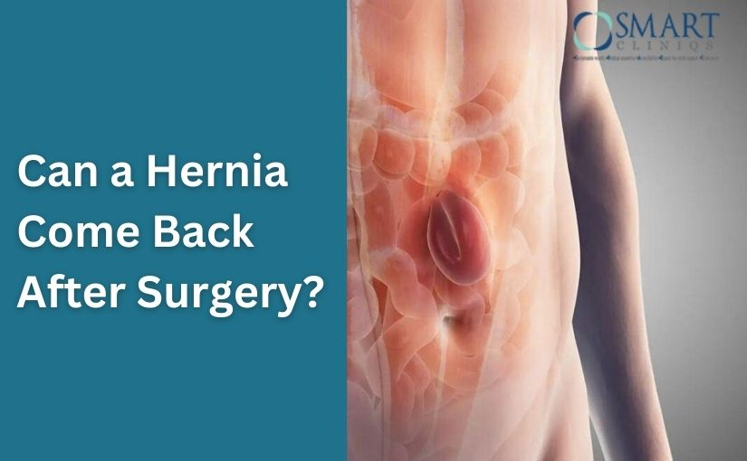

Hernia surgery is often considered a permanent solution to an uncomfortable and sometimes painful condition. Most patients expect that once the surgery is done, the hernia problem will never return. However, many people still wonder: can a hernia come back after surgery?
The honest answer is yes, it can, although it does not happen to everyone. The chances of recurrence depend on several factors, including the type of hernia, the surgical method used, the patient’s health, and postoperative lifestyle habits. Under the guidance of experienced specialists like Dr. Atul Peters, modern hernia surgeries have significantly reduced the risk of recurrence.
This blog explains everything you need to know—why hernias recur, how often they happen, warning signs, prevention tips, and what to do if it happens again.
Can a Hernia Come Back After Surgery?
Can a hernia come back after surgery? Learn about recurrence risks, causes, prevention tips, and how proper care can reduce the chances of hernia returning.
Book Your Appointment TodayUnderstanding Hernia
A hernia occurs when an internal organ or tissue pushes through a weak spot in the muscle wall. This usually creates a visible bulge and may cause pain or discomfort, especially while lifting, coughing, or standing for long periods.
Common types of hernia include:
- Inguinal hernia (groin)
- Umbilical hernia (navel area)
- Incisional hernia (previous surgery site)
- Femoral hernia
- Hiatal hernia
Surgery is the only long-term treatment for most hernias.
Can a Hernia Come Back After Surgery?
Yes, a hernia can come back after surgery, but it does not happen in every case. Hernia surgery is designed to repair the weak area in the muscle wall, but certain factors can cause the repaired area to weaken again over time. This is known as hernia recurrence. With modern surgical techniques and proper recovery care, the chances of recurrence are much lower than before.
Most hernia surgeries today are safe and successful. However, the long-term outcome depends not only on the surgery itself but also on the patient’s health, lifestyle habits, and how well post-surgery instructions are followed.
How Common Is Hernia Recurrence?
Hernia recurrence is not very common, especially with advanced repair methods. The risk varies from person to person and depends on several factors.
In general:
- Modern hernia surgeries have low recurrence rates
- Mesh-based repairs reduce the chance of a hernia coming back
- Larger or complex hernias have a slightly higher risk
Why Does a Hernia Come Back After Surgery?

Understanding the causes of recurrence helps patients prevent future problems.
1. Weak Muscle or Tissue Quality
Some people naturally have weaker connective tissues due to age, genetics, or medical conditions. Even after repair, the surrounding tissue may weaken over time.
2. Improper Healing
Slow or poor healing increases the chance of recurrence. Common reasons include:
- Diabetes
- Smoking
- Obesity
- Poor nutrition
- Reduced blood supply to tissues
3. Heavy Physical Activity Too Early
Returning to lifting or intense activity before complete healing puts stress on the repaired area, which can cause failure of the repair.
4. Chronic Cough or Constipation
Constant pressure caused by:
- Long-term coughing
- Severe constipation
- Straining during urination
can weaken the repair and lead to recurrence.
5. Surgical Technique Used
Different repair methods have different outcomes:
- Mesh repair reduces tension and recurrence
- Tissue-only repair may stretch over time
- Laparoscopic methods often provide quicker recovery
Surgeon skill and technique selection are critical.
6. Infection After Surgery
Infections weaken tissue and may compromise the repair, increasing the risk of hernia recurrence.
Warning Signs of a Recurrent Hernia
Early symptoms include:
- A new or returning bulge
- Pain or discomfort at the surgical site
- Pressure when standing or bending
- Burning or pulling sensation
Ignoring these signs may lead to complications.
How to Reduce the Risk of Hernia Recurrence
Reducing the risk of hernia recurrence requires a combination of proper medical care, healthy lifestyle habits, and careful recovery after surgery. While hernia surgery repairs the weak area, long-term success depends on how well the body heals and how the patient protects the repaired site.

Following the right precautions can significantly lower the chances of the hernia coming back.
1. Follow Post-Surgery Instructions Carefully
One of the most important ways to reduce hernia recurrence is to strictly follow the post-operative instructions given by your surgeon. These guidelines are designed to allow the repaired muscle and tissues to heal properly. Ignoring advice related to rest, movement, or wound care can put unnecessary pressure on the surgical site and increase the chances of the hernia coming back.
2. Avoid Heavy Lifting and Straining
Heavy lifting is one of the biggest causes of hernia recurrence. Lifting weights, carrying heavy objects, or sudden twisting movements can strain the abdominal muscles before they are fully healed. Even after recovery, it is important to use correct lifting techniques and avoid putting excessive pressure on the abdomen to protect the repaired area.
3. Maintain a Healthy Body Weight
Excess body weight increases pressure on the abdominal wall, which can weaken the repaired area over time. Maintaining a healthy weight reduces constant strain on the muscles and lowers the risk of recurrence. Gradual weight loss through balanced nutrition and light physical activity is especially helpful after hernia surgery.
4. Quit Smoking for Better Healing
Smoking negatively affects blood circulation and slows down tissue healing. Poor healing increases the risk of complications and hernia recurrence. Quitting smoking before and after surgery improves oxygen supply to tissues, supports proper healing, and strengthens the surgical repair in the long run.
5. Eat a Nutritious and Protein-Rich Diet
Good nutrition plays a key role in strengthening muscles and tissues after surgery. A diet rich in protein, vitamins, and minerals supports faster healing and improves tissue strength. Proper hydration also helps prevent constipation, which can otherwise cause straining and increase pressure on the repaired area.
6. Choose the Right Surgeon
Choosing the right surgeon and surgical technique is one of the most important steps in reducing the risk of hernia recurrence. An experienced Hernia Surgeon in Delhi, such as Dr. Atul Peters, understands how to assess the type, size, and complexity of a hernia and select the most effective repair method for long-term success. Proper surgical planning, accurate mesh placement, and tension-free repair techniques play a critical role in strengthening the abdominal wall and preventing the hernia from coming back.
Can a Hernia Come Back After Surgery?
Can a hernia come back after surgery? Learn about recurrence risks, causes, prevention tips, and how proper care can reduce the chances of hernia returning.
Book Your Appointment TodayFinal Takeaway
A hernia can come back after surgery, but the risk is much lower today thanks to modern surgical techniques and better post-operative care. Most recurrences happen due to factors such as early strain, poor healing, unmanaged health conditions, or lifestyle habits rather than the surgery itself. By following medical advice, avoiding heavy lifting, maintaining a healthy weight, and taking recovery seriously, patients can greatly reduce the chances of a hernia returning and enjoy long-term relief.
Choosing the right surgeon also plays a crucial role in long-term success. Experienced specialists like Dr. Atul Peters focus on precise repair techniques, proper surgical planning, and patient-specific care to minimize recurrence risk. With the right approach, disciplined recovery, and expert guidance, most patients can return to normal daily activities with confidence and peace of mind.